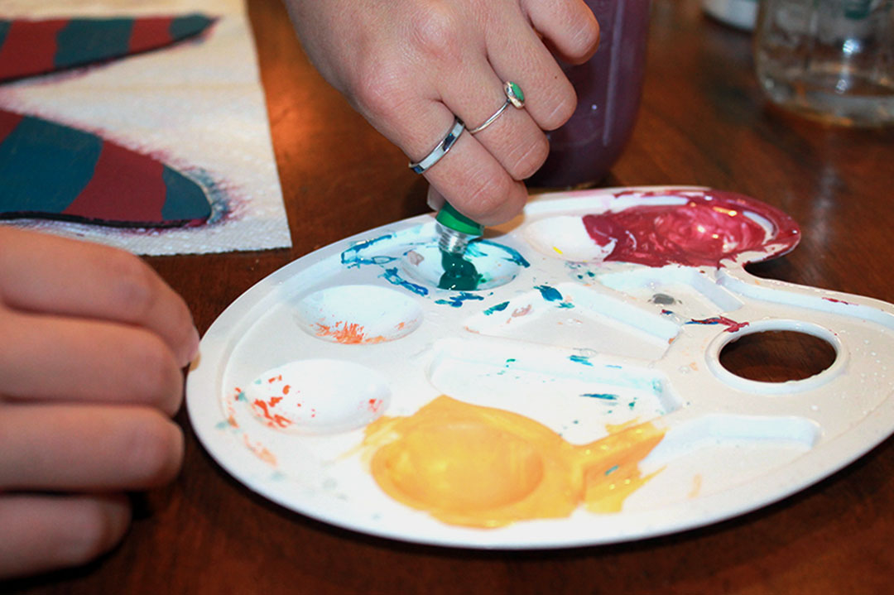
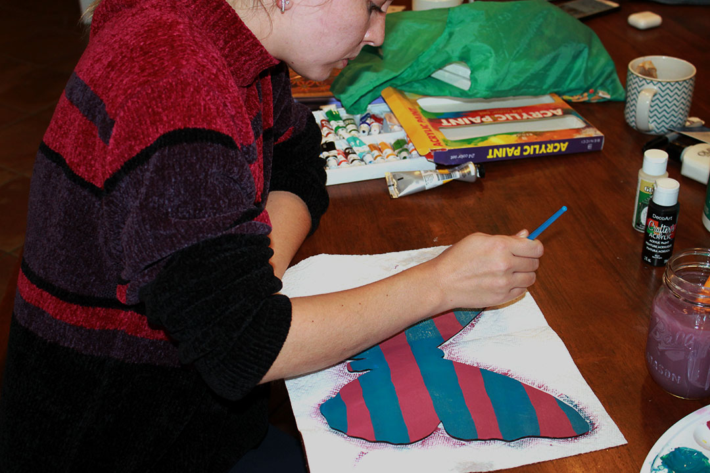
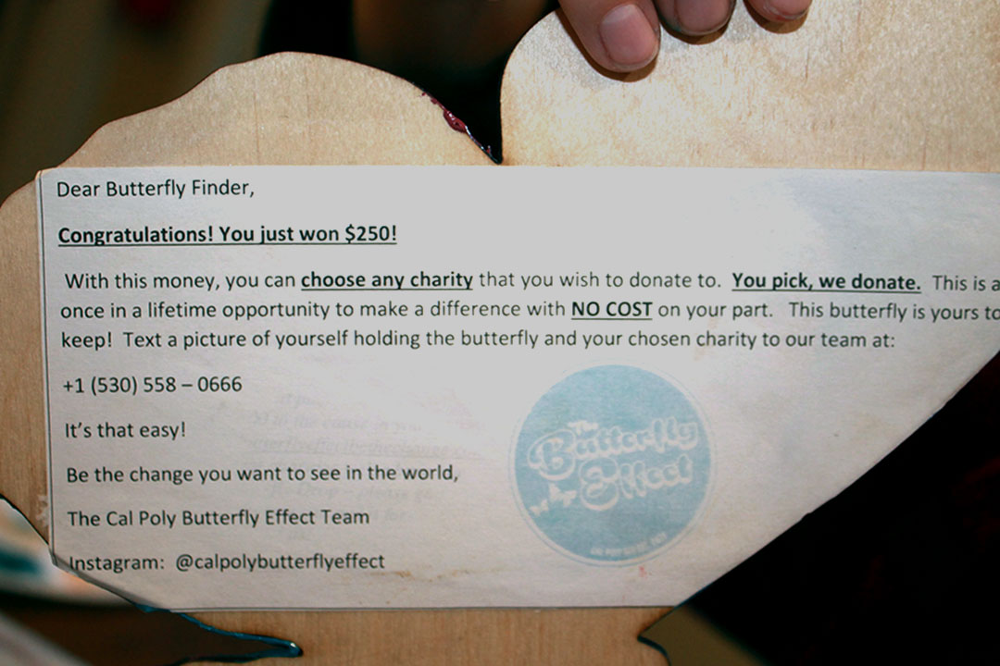
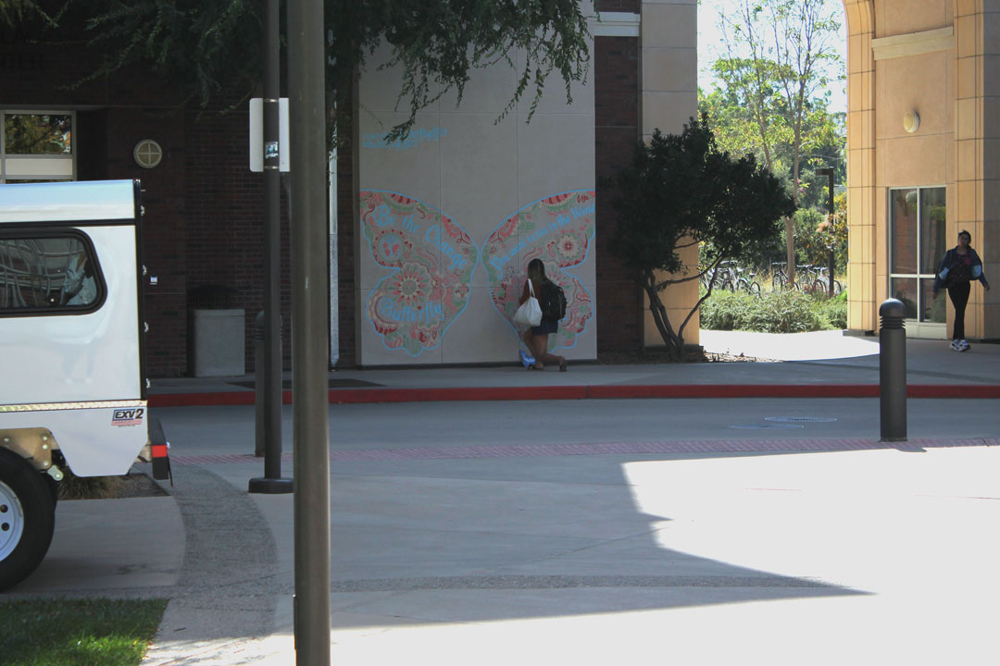
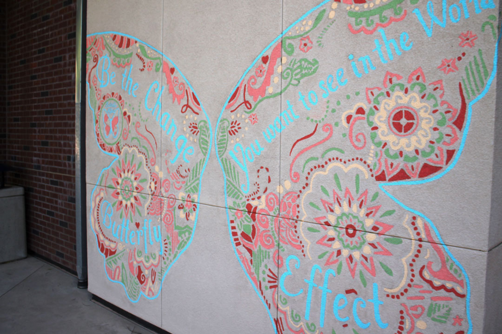
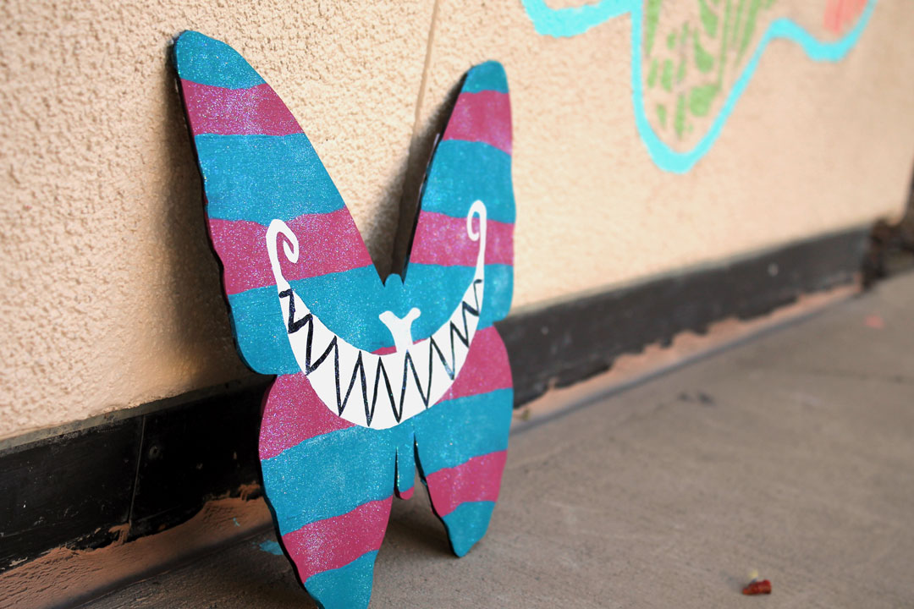
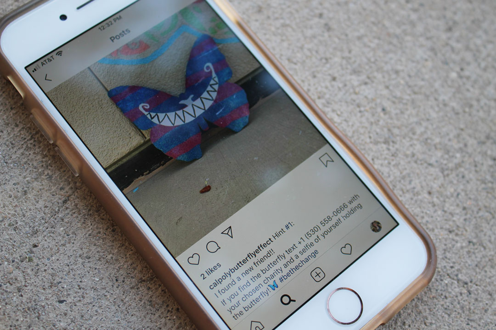
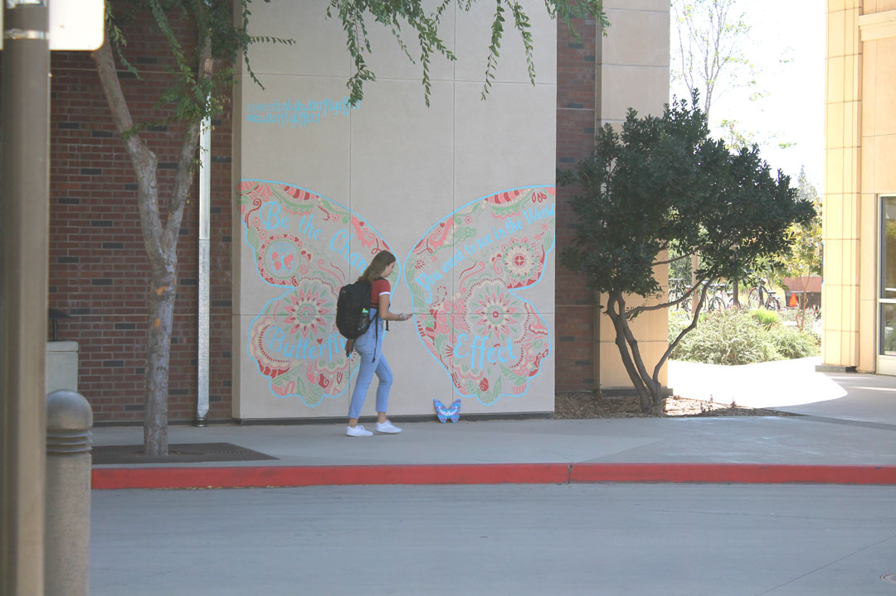
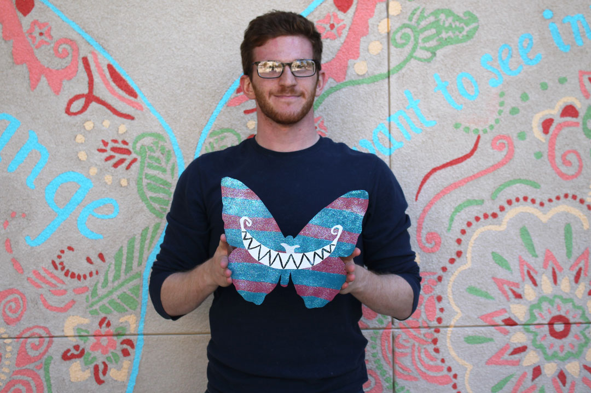
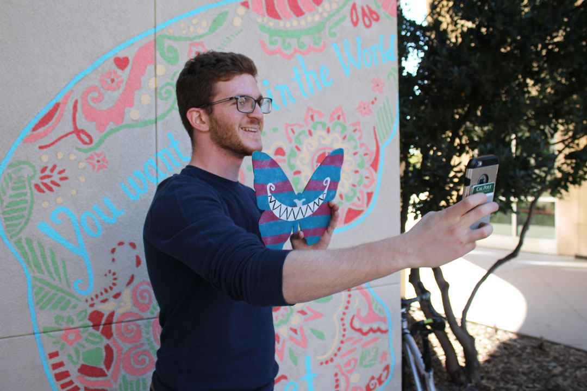

The Cal Poly Butterfly Effect Club
Once a month, a wooden butterfly is hidden on campus.
1 / 13

San Luis Obispo, October 18: Before the Cal Poly Butterfly Effect Club can begin one of their butterfly drops, they need someone to take on the task of painting the wooden creature.
2 / 13

San Luis Obispo, October 18: Kinesiology senior Lucy Swift was asked by club president Sarah Ruhe to paint the butterfly after Ruhe saw the paintings Swift had made for herself in her bedroom. Swift happily obliged. “It’s a fun and effective way to get students involved in change that is bigger than themselves,” she said. “Feeling like I’ve helped this club even a little bit has made me feel honored to be a part of the change they are bringing to this campus.”
3 / 13

San Luis Obispo, October 18: Once Swift paints the butterfly, it will be hidden somewhere on Cal Poly’s campus. Whoever finds the butterfly chooses a charity that the club then donates $250 to.
4 / 13

Poly Canyon Village, October 18: On the day of the drop, the club hides the wooden butterfly in a chosen location before posting hints on where to find it on the club’s Instagram account. Anyone who sees the hints is able to join the hunt.
5 / 13

Poly Canyon Village, October 18: On October 18, the butterfly was placed with a mural painted by the Butterfly Effect club in Poly Canyon Village. The mural reads, “Be the change you want to see in the world.” For every 1,000 pictures taken with the mural, the club will donate $1,000 to a charity chosen by club members.
6 / 13

Poly Canyon Village, October 18: Swift used the Cheshire Cat from “Alice and Wonderland” as inspiration when painting the butterfly. Ruhe feels that this club connects her, and anyone else that helps paint, to art in a special way. “I used to avoid helping out with art projects and creative assignments,” she said. “But being surrounded by art so often has shown me the joy in [just] trying. A little creative exploration never hurt anybody.”
7 / 13

Poly Canyon Village, October 18: The first hint posted to Instagram read, “I found a new
friend,” reflecting one of Ruhe’s most rewarding experiences with this club. “Kindness has connected me with so many new people, whether they came up and talked to me while I was painting the mural or started attending club meetings,” she said.
8 / 13

Poly Canyon Village, October 18: Even after the second hint was posted to Instagram, many unsuspecting students walked by without a second glance.
9 / 13

Poly Canyon Village, October 18: Physics junior Jacob Siderman turned out finding the butterfly. He said he saw the hints for a previous drop too late and was determined to find this butterfly after missing out on the last one. The moment the first hint was posted on Instagram, he rode his bike all the way to PCV.
10 / 13

Poly Canyon Village, October 18: Siderman chose to donate the $250 to the Ability Experience, the philanthropy his fraternity actively supports. The philanthropy strives to support those with mental and physical abilities. “They do really, really, really great work and I think they promote very important social initiatives,” he said.
11 / 13
Poly Canyon Village, October 18: The Cal Poly Butterfly Effect does multiple drops throughout the school year, offering any and all students endless opportunities to make a difference.
❮
❯